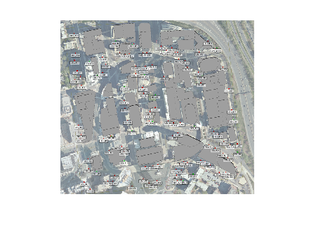
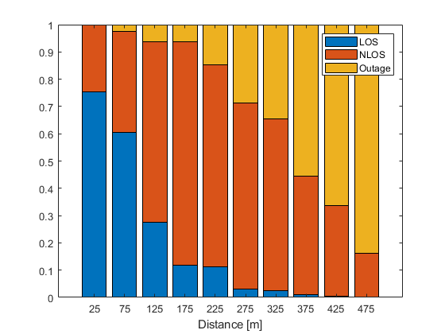

Lab: Fitting Propagation Models from Ray Tracing Data
Ray tracing is a widely-used method for predicting wireless coverage in complex indoor and outdoor environments. Ray tracers take a 3D model of some region along with locations of transmitters and can predict the path characteristics from the transmitter locations to specified receiver locations. Ray tracing requires certain assumptions (such as building materials to make the material), so they may not be exact. Nevertheless, they provide an excellent approximation and are often used by cellular carriers to select sites for deploying cells. In this lab, we will use ray tracing outputs to generate a collection of path data from which we can fit analytic models. Ray tracing can provide much more data than would be possible with time-consuming real measurements.
In going through this data, you will learn to:
- Load and describe ray tracing data produced from a commercial ray tracing tool
- Compute the omni-directional path loss from the ray tracing data
- Determine if links are in outage (no path), LOS or NLOS
- Visualize the path loss and link state as a function of distance
- Fit simple models for the path loss and link state using machine learning tools
Submission: Complete all the sections marked TODO, and run the cells to make sure your scipt is working. When you are satisfied with the results, publish your code to generate an html file. Print the html file to PDF and submit the PDF.
Contents
Data from Remcom
The data is in this lab was created by NYU MS student Sravan Chintareddy and Research Scientist Marco Mezzavilla. They used a widely-used and powerful commercial ray tracer from Remcom. Remcom is one of the best ray tracing tools in the industry. Although we will illustrate the concepts at 1.9 GHz carrier, the Remcomm tool is particularly excellent for mmWave studies. Remcom has generously provided their software to NYU for purpose of generating the data for this lab and other research.
The data was in this lab comes from a simulation of a section of Reston, VA. In this simulation, a number of transmitters were placed in the area in location similar to possible micro-cellular sites. The receivers were placed on street levels similar to pedestrians (UEs). We can plot the area and the sites with the following.
A = imread('map.png'); imshow(A, 'InitialMagnification', 40);
Loading the data
We can load the data with the following command. This will create three variables in your workspace.
- txpos: A trx x 3 array of the positions of the transmitters
- rxpos: An nrx x 3 array of the positions of the receivers
- pathTable: A table of all the paths
load pathData; % TODO: Find nrx, ntx and npath nrx = size(rxpos,1); ntx = size(txpos,1); npath = size(pathTable,1); fprintf(1, 'number of receivers = %.2f\n', nrx); fprintf(1, 'number of transmitters = %.2f\n', ntx); fprintf(1, 'number of paths = %.2f\n', npath); % TODO: Plot the locations of the TX and RX on the x-y plane. % You can ignore the z coordinate of both in the plot. Use different % markers (e.g. 'o' and 's' for the TX and RXs). figure; plot(txpos(:,1), txpos(:,2), 'o'); hold on; plot(rxpos(:,1), rxpos(:,2), 's'); grid on; ylabel('m','fontsize',12); xlabel('m', 'fontsize',12); title('Transmitters and Receivers locations'); legend('TXs','RXs', 'Location', 'southoutside','orientation','horizontal');
number of receivers = 100.00 number of transmitters = 20.00 number of paths = 24297.00
Determine omni-directional path loss and minimum path delay
The table, pathTable, has one row for each path found in the ray tracer. Each path has a TXID and RXID and key statistics like the RX power and delay. Due to multi-path, a (TXID,RXID) pair may have more than one path.
% TODO: Use the head command to print the first few rows of the path % table. disp(head(pathTable,5)); % TODO: Loop through the paths and create the following arrays, % such that for each RXID i and TXID j: % pathExists(i,j) = 1 if there exists at least one path % totRx(i,j) = total RX power in linear scale % minDly(i,j) = minimum path delay (taken from the toa_sec column) txIDs = int32(pathTable(:,{'TXID'}).Variables); rxIDs = pathTable(:,{'RXID'}).Variables; rxPowers = pathTable(:,{'rx_power_dbm'}).Variables; delays = pathTable(:,{'toa_sec'}).Variables; maxTXID = max(txIDs); maxRXID = max(rxIDs); pathExists = zeros(nrx,ntx); totRx = zeros(nrx,ntx); minDly = 100*ones(nrx,ntx); for p = 1:npath pathExists(rxIDs(p),txIDs(p)) = 1; totRx(rxIDs(p),txIDs(p)) = totRx(rxIDs(p),txIDs(p)) + db2pow(rxPowers(p)); minDly(rxIDs(p),txIDs(p)) = min(minDly(rxIDs(p),txIDs(p)), delays(p)); end % TODO: For each link (i,j), compute the omni-directional path loss, % which is defined as the txPowdBm - total received power (dBm). % In this dataset, txPowdBm = 36 txPowdBm = 36; plomni = txPowdBm - pow2db(totRx);
TXID RXID rx_power_dbm Phase_deg toa_sec doa_theta_deg doa_phi_deg aoa_theta_deg aoa_phi_deg
____ ____ ____________ _________ __________ _____________ ___________ _____________ ___________
1 1 -36.444 -39.827 1.6711e-07 85.51 34.222 94.49 -145.78
1 1 -39.774 93.772 1.7921e-07 85.813 40.727 94.187 150.77
1 1 -43.031 152.01 1.6815e-07 96.635 34.707 98.116 -145.94
1 1 -45.614 -30.955 1.8011e-07 95.542 41.133 97.573 150.91
1 1 -57.011 52.312 1.0343e-06 89.275 11.876 90.725 3.643
Plot the path loss vs. distance
Just to get an idea of the path losses, we plot the omni directional path losses as a function of distance and compare against the FSPL.
% TODO: Using the arrays rxpos and txpos, compute % dist(i,j) = distance between RX i and TX j in meters. % Do this without for loops. x_dist = rxpos(:,1) - txpos(:,1)'; y_dist = rxpos(:,2) - txpos(:,2)'; z_dist = rxpos(:,3) - txpos(:,3)'; dist = sqrt(x_dist.^2 + y_dist.^2 + z_dist.^2); % At this point, you should have nrx x ntx matrices such as dist, % plomni, minDly and pathExists. For the subsequent analysis, it is % useful to convert these to nrx*ntx x 1 vectors. % % TODO: Convert dist, plomni, minDly and pathExists to vectors % dist1, plomni1, ... distl = reshape(dist,[nrx*ntx,1]); plomnil = reshape(plomni,[nrx*ntx,1]); minDlyl = reshape(minDly,[nrx*ntx,1]); pathExistsl = logical(reshape(pathExists,[nrx*ntx,1])); % TODO: Compute the free-space path loss for 100 points from dmin to dmax. % Use the fspl() command. dmin = 10; dmax = 500; fc = 1.9e9; % Carrier frequency fspl_points = linspace(dmin,dmax,100); lambda = physconst('Lightspeed')/fc; fspl_ = fspl(fspl_points,lambda); % TODO: Create a scatter plot of plomni1 vs. dist1 on the links % for which there exists a path. On the same plot, plot the FSPL. % Use semilogx to put the x axis in log scale. Label the axes. % Add a legend. figure; semilogx(distl(pathExistsl), plomni(pathExistsl),'x'); hold on; semilogx(fspl_points, fspl_, 'o'); grid on; xlabel('Distance [m]'); ylabel('Path Loss [dB]'); legend('Remcom Data','FSPL', 'Location', 'northwest'); title('Path Loss vs Distance');
Classify points
In many analyses of propagation models, it is useful to classify links as being in LOS, NLOS or outage. Outage means there is no path.
% TODO: Create a vector Ilink of size nrx*ntx x 1 where % linkState(i) = losLink = 1: If the link has a LOS path % linkState(i) = nlosLink = 2: If the link has only NLOS paths % linkState = nrx*ntx; losLink = 0; nlosLink = 1; outage = 2; ref_Delay = distl./physconst('Lightspeed') + 1e-9; Ilink = zeros(nrx*ntx,1); Ilink(minDlyl > ref_Delay) = nlosLink; Ilink(pathExistsl == 0) = outage; % TODO: Print the fraction of the links in each of the three states fprintf(1, 'the fraction of links in LOS is = %.2f\n',sum(Ilink==losLink)/(nrx*ntx)*100); fprintf(1, 'the fraction of links in NLOS is = %.2f\n',sum(Ilink==nlosLink)/(nrx*ntx)*100); fprintf(1, 'the fraction of links in Outage is = %.2f\n',sum(Ilink==outage)/(nrx*ntx)*100);
the fraction of links in LOS is = 14.20 the fraction of links in NLOS is = 57.25 the fraction of links in Outage is = 28.55
Plot the path loss vs. distance for the NLOS and LOS links
To get an idea for the variation of the path loss vs. distance, we will now plot the omni path loss vs. distance separately for the LOS and NLOS points. You should see that the LOS points are close to the FSPL, but the NLOS points have much higher path loss.
% TODO: Create a scatter plot of the omni path loss vs. distance % using different markers for LOS and NLOS points. On the same graph, % plot the FSPL. Label the axes and add a legend. figure; semilogx(distl(Ilink==losLink), plomni(Ilink==losLink),'x'); hold on; semilogx(distl(Ilink==nlosLink), plomni(Ilink==nlosLink),'s'); hold on; semilogx(fspl_points, fspl_, 'o'); grid on; xlabel('Distance [m]'); ylabel('Path Loss [dB]'); legend('Remcom: LOS','Remcom: NLOS','FSPL', 'Location', 'northwest'); title('Path Loss vs Distance');
Linear fit for the path loss model
We will now fit a simple linear model of the form,
plomni = a + b*10*log10(dist) + xi, xi ~ N(0, sig^2)
MATLAB has some basic tools for performing simple model fitting like this. The tools are not as good as sklearn in python, but they are OK. In this case, you can read about the fitlm() command to find the coefficients (a,b) and sig for the LOS and NLOS models. For sig, take the RMSE as the estimate, which is the root mean squared error.
% TODO: Fit linear models for the LOS and NLOS cases % Print the parametrs (a,b,sig) for each model. los_model = fitlm(10*log10(distl(Ilink==losLink)), plomni(Ilink==losLink)); nlos_model = fitlm(10*log10(distl(Ilink==nlosLink)), plomni(Ilink==nlosLink)); los_sigma = los_model.RMSE; nlos_sigma = nlos_model.RMSE; los_coeffs = los_model.Coefficients(:,{'Estimate'}).Variables; nlos_coeffs = nlos_model.Coefficients(:,{'Estimate'}).Variables; fprintf('LOS Model: a = %.2f, b = %.2f, sigma = %.2f \n', los_coeffs(1), los_coeffs(2), los_sigma); fprintf('NLOS MOdel: a = %.2f, b = %.2f, sigma = %.2f \n', nlos_coeffs(1), nlos_coeffs(2), nlos_sigma); % TODO: Plot the path loss vs. distance for the points for the LOS and % NLOS points as before along with the lines for the linear predicted % average path loss, a + b*10*log10(dist). los_pred = los_coeffs(1) + los_coeffs(2)*10*log10(distl(Ilink==losLink)); % + randn(sum(Ilink==losLink),1)*los_sigma; nlos_pred = nlos_coeffs(1) + nlos_coeffs(2)*10*log10(distl(Ilink==nlosLink)); % + randn(sum(Ilink==nlosLink),1)*nlos_sigma; figure; semilogx(distl(Ilink==losLink), plomni(Ilink==losLink),'x'); hold on; semilogx(distl(Ilink==nlosLink), plomni(Ilink==nlosLink),'s'); hold on; semilogx(distl(Ilink==losLink),los_pred,'o'); hold on; semilogx(distl(Ilink==nlosLink),nlos_pred,'*'); grid on; xlabel('Distance [m]'); ylabel('Path Loss [dB]'); legend('Remcom: LOS','Remcom: NLOS','LOS model','NLOS model', 'Location', 'northwest'); title('Path Loss vs Distance');
LOS Model: a = 35.36, b = 2.10, sigma = 4.78 NLOS MOdel: a = -8.72, b = 5.49, sigma = 16.07
Plotting the link state
The final part of the modeling is to understand the probability of a link state as a function of the distance. To visualize this, divide the distances into bins with bin i being
[(i-1)*binwid, i*binwid], i = 1,...,nbins
We will create an array nbins x 3 arrays:
cnt(i,j) = number links whose distance is in bin i and linkState = j
cntnorm(i,j)
= cnt(i,j) / sum( cnt(i,:) )
= fraction of links whose distance is in bin i and linkState = jnbins = 10; binwid = 50; binlim = [0,nbins*binwid]; bincenter = ((0:nbins-1)' + 0.5)*binwid; % TODO: Compute cnt and cntnorm as above. You may use the histcounts % function. cnt = zeros(nbins,3); edges = 0:binwid:nbins*binwid; cnt(:,1) = histcounts(distl(Ilink==losLink), edges); cnt(:,2) = histcounts(distl(Ilink==nlosLink), edges); cnt(:,3) = histcounts(distl(Ilink==outage), edges); cntnorm = cnt./sum(cnt,2); % TODO: Plot cntnorm vs. bincenter using the bar() command with the % 'stacked' option. Label the axes and add a legend figure; bar(bincenter,cntnorm, 'stacked'); xlabel('Distance [m]'); legend('LOS','NLOS','Outage');
Predicting the link state
We conclude by fitting a simple model for the probability. We will use a simple multi-class logistic model where, for each link i, the relative probability that linkState(i) == j is given by:
log P(linkState(i) == j)/P(linkState(i) == 0)
= -B(1,j)*dist1(i) - B(2,j)
for j=1,2. Here, B is the matrix of coefficients of the model. So the probability that a link is in a state decays exponentially with distnace. 3GPP uses a slightly different model, but we use this model to make this simple.
Fitting logistic models is discussed in the ML class. Here, we will use the MATLAB mnrfit routine.
% TODO: Use the mnrfit() method to find the coefficients B. You will need % to set the response variable to y = linkState + 1 since it expects class % labels starting at 1. B = mnrfit(distl,Ilink+1); % TODO: Use the mnrval() method to predict the probabilties of each class % as a function of distance. Phat = mnrval(B,distl); [~,yhat] = max(Phat,[],2); % TODO: Plot the probabilities as a function of the distance. % Label your graph. phat_los = Phat(:,1); phat_nlos = Phat(:,2); phat_out = Phat(:,3); [sorted, idx] = sort(distl); figure; plot(sorted, phat_los(idx),sorted,phat_nlos(idx),sorted,phat_out(idx),'linewidth',2); grid on; xlim([min(sorted),max(sorted)]); xlabel('Distance [m]'); ylabel('Probability'); legend('LOS','NLOS','Outage', 'location','north','orientation','horizontal');
Compare the link state
Finally, to compare the predicted probabilties with the measured valued, plot the probabilities as a function of the distance on top of the bar graph in a way to see if they are aligned. You should see a good fit
figure; bar(bincenter,cntnorm, 'stacked'); hold on; I = (distl <= 500); distl_r = distl(I); phat_los_r = phat_los(I);phat_nlos_r = phat_nlos(I); [sorted_r,idx_r] = sort(distl_r); plot(sorted_r, phat_los_r(idx_r),'linewidth',2); hold on; plot(sorted_r, phat_los_r(idx_r)+phat_nlos_r(idx_r),'linewidth',2); xlabel('Distance [m]'); legend('LOS','NLOS','Outage','LOS Pred','LOS+NLOS Pred');